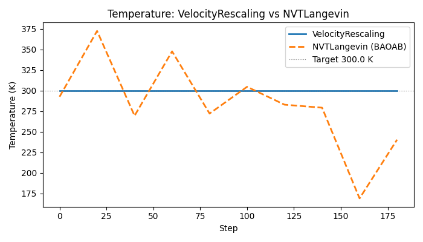

Note
Go to the end to download the full example code.
Building a Custom Integrator by Subclassing BaseDynamics#
BaseDynamics is the single extension point
for writing new molecular dynamics integrators. Subclasses implement two
methods — pre_update(batch) and post_update(batch) — that bracket the
model forward pass (force computation).
The step sequence is:
BEFORE_STEP hooks
pre_update(batch)— BEFORE_PRE_UPDATE → update → AFTER_PRE_UPDATE hookscompute(batch)— BEFORE_COMPUTE → model forward → AFTER_COMPUTE hookspost_update(batch)— BEFORE_POST_UPDATE → update → AFTER_POST_UPDATE hooksAFTER_STEP hooks
Convergence check → ON_CONVERGE hooks
For Velocity Verlet this maps cleanly to the standard VV splitting:
pre_update: v(t + dt/2) = v(t) + (dt/2) F(t)/m; r(t+dt) = r(t) + dt v(t+dt/2)[model evaluates F(r(t+dt))]
post_update: v(t+dt) = v(t+dt/2) + (dt/2) F(t+dt)/m
This example implements a velocity-rescaling thermostat (Woodcock 1971) on top of Velocity Verlet. At every step velocities are rescaled so that the instantaneous kinetic temperature equals the target temperature exactly.
Warning
The velocity-rescaling thermostat is not a canonical (NVT) thermostat.
It samples a constant-kinetic-energy ensemble rather than the
Maxwell-Boltzmann distribution. It is included here solely to illustrate
the BaseDynamics API. Use NVTLangevin for
production NVT simulations.
from __future__ import annotations
import logging
import math
import os
import torch
from nvalchemi.data import AtomicData, Batch
from nvalchemi.dynamics import NVTLangevin
from nvalchemi.dynamics.base import BaseDynamics, HookStageEnum
from nvalchemi.dynamics.hooks import NeighborListHook
# KB_EV and kinetic_energy_per_graph are internal helpers used by the built-in
# integrators. A stable public re-export may be added in a future release.
from nvalchemi.dynamics.hooks._utils import KB_EV, kinetic_energy_per_graph
from nvalchemi.models.lj import LennardJonesModelWrapper
logging.basicConfig(level=logging.INFO)
The BaseDynamics contract#
To create a new integrator, subclass BaseDynamics and override:
__needs_keys__ : set[str]Keys that the model must produce (validated after compute). Almost always
{"forces"}.__provides_keys__ : set[str]Keys that this dynamics writes to the batch. Declare
{"positions", "velocities"}for a velocity-based integrator.pre_update(batch) -> NoneUpdate positions (and half-kick velocities) in-place.
post_update(batch) -> NoneFinish the velocity update using the newly computed forces.
Optionally override _init_state(batch) and _make_new_state(n, batch)
if the integrator needs persistent per-system state (see the skeleton at the
end of this example).
Implementing VelocityRescalingThermostat#
The integrator performs a standard Velocity Verlet step, then rescales velocities so that the instantaneous temperature equals the target.
The rescaling factor is:
This is an O(1) operation — no Nose-Hoover chain, no stochastic noise.
class VelocityRescalingThermostat(BaseDynamics):
"""Velocity Verlet integrator with instantaneous velocity rescaling.
At each step:
1. Half velocity kick: v(t + dt/2) = v(t) + (dt/2) F(t)/m
2. Position update: r(t + dt) = r(t) + dt v(t + dt/2)
3. [model: F(r(t+dt))]
4. Second half kick: v(t + dt) = v(t + dt/2) + (dt/2) F(t+dt)/m
5. Rescale velocities: v ← v × sqrt(T_target / T_current)
.. warning::
This is **not** a canonical NVT thermostat. It produces constant
kinetic energy, not a Maxwell-Boltzmann distribution. Use
:class:`~nvalchemi.dynamics.NVTLangevin` for proper NVT sampling.
Parameters
----------
model : BaseModelMixin
Neural network potential.
dt : float
Integration timestep (simulation time units, e.g. fs).
temperature : float
Target temperature in Kelvin.
**kwargs
Forwarded to :class:`~nvalchemi.dynamics.base.BaseDynamics`.
"""
__needs_keys__: set[str] = {"forces"}
__provides_keys__: set[str] = {"positions", "velocities"}
def __init__(
self,
model,
dt: float,
temperature: float,
**kwargs,
) -> None:
super().__init__(model=model, **kwargs)
self.dt = dt
self.temperature = temperature # K
def pre_update(self, batch: Batch) -> None:
"""Velocity Verlet first half: half kick then position update.
Updates ``batch.velocities`` (to v(t+dt/2)) and
``batch.positions`` (to r(t+dt)) in-place.
Parameters
----------
batch : Batch
Current batch. ``forces``, ``velocities``, ``positions``,
and ``atomic_masses`` must be present.
"""
# atomic_masses: [N] or [N,1] — normalise to [N,1] for broadcasting.
masses = batch.atomic_masses
if masses.dim() == 1:
masses = masses.unsqueeze(-1) # [N, 1]
# Half velocity kick: v(t+dt/2) = v(t) + (dt/2) * F(t) / m
batch.velocities.add_(0.5 * self.dt * batch.forces / masses)
# Full position update: r(t+dt) = r(t) + dt * v(t+dt/2)
batch.positions.add_(self.dt * batch.velocities)
def post_update(self, batch: Batch) -> None:
"""Velocity Verlet second half + velocity rescaling.
Completes the velocity update using the newly computed forces,
then rescales velocities to hit ``self.temperature``.
Parameters
----------
batch : Batch
Current batch after compute; ``forces`` holds F(r(t+dt)).
"""
masses = batch.atomic_masses
if masses.dim() == 1:
masses = masses.unsqueeze(-1) # [N, 1]
# Second half kick: v(t+dt) = v(t+dt/2) + (dt/2) * F(t+dt) / m
batch.velocities.add_(0.5 * self.dt * batch.forces / masses)
# --- Velocity rescaling ---
# Compute instantaneous KE and temperature per graph.
ke = kinetic_energy_per_graph(
velocities=batch.velocities,
masses=batch.atomic_masses,
batch_idx=batch.batch,
num_graphs=batch.num_graphs,
).squeeze(-1) # [B]
n_atoms = batch.num_nodes_per_graph.float() # [B]
T_inst = (2.0 * ke) / (3.0 * n_atoms * KB_EV) # [B] in Kelvin
T_inst = T_inst.clamp(min=1e-6) # avoid division by zero
# Rescaling factor λ[B] broadcast to per-atom [N,1].
lam = (self.temperature / T_inst).sqrt() # [B]
lam_per_atom = lam[batch.batch].unsqueeze(-1) # [N, 1]
batch.velocities.mul_(lam_per_atom)
Running VelocityRescalingThermostat#
LJ_EPSILON = 0.0104
LJ_SIGMA = 3.40
LJ_CUTOFF = 8.5
_R_MIN = 2 ** (1 / 6) * LJ_SIGMA
model = LennardJonesModelWrapper(
epsilon=LJ_EPSILON,
sigma=LJ_SIGMA,
cutoff=LJ_CUTOFF,
max_neighbors=32,
)
def _make_cluster(n_per_side: int = 2, seed: int = 0) -> AtomicData:
n = n_per_side**3
spacing = _R_MIN * 1.05
coords = torch.arange(n_per_side, dtype=torch.float32) * spacing
gx, gy, gz = torch.meshgrid(coords, coords, coords, indexing="ij")
positions = torch.stack([gx.flatten(), gy.flatten(), gz.flatten()], dim=-1)
torch.manual_seed(seed)
positions = positions + 0.05 * torch.randn_like(positions)
# Maxwell-Boltzmann at 300 K: v_std = sqrt(kB * T / m), m_Ar = 39.948 amu
_v_std = math.sqrt(KB_EV * 300.0 / 39.948)
return AtomicData(
positions=positions,
atomic_numbers=torch.full((n,), 18, dtype=torch.long),
forces=torch.zeros(n, 3),
energies=torch.zeros(1, 1),
velocities=_v_std * torch.randn(n, 3),
)
# Temperature-logging hook shared across runs.
class _TempLogger:
"""Log instantaneous temperature every N steps."""
stage = HookStageEnum.AFTER_STEP
def __init__(self, label: str, storage: list, frequency: int = 20) -> None:
self.label = label
self.storage = storage
self.frequency = frequency
def __call__(self, batch: Batch, dynamics) -> None:
ke = kinetic_energy_per_graph(
batch.velocities, batch.atomic_masses, batch.batch, batch.num_graphs
).squeeze(-1)
n_atoms = batch.num_nodes_per_graph.float()
T_inst = (2.0 * ke) / (3.0 * n_atoms * KB_EV)
self.storage.append(T_inst.mean().item())
print("=== VelocityRescalingThermostat ===")
T_RESCALE = 300.0
n_steps = 200
data = _make_cluster(seed=42)
batch_vr = Batch.from_data_list([data])
temps_rescaling: list[float] = []
integrator = VelocityRescalingThermostat(
model=model,
dt=0.5,
temperature=T_RESCALE,
n_steps=n_steps,
)
integrator.register_hook(NeighborListHook(model.model_card.neighbor_config))
integrator.register_hook(_TempLogger("VR", temps_rescaling, frequency=20))
batch_vr = integrator.run(batch_vr)
print(f"Run complete: {integrator.step_count} steps")
print(
f"Temperature mean = {sum(temps_rescaling) / len(temps_rescaling):.1f} K "
f"(std = {torch.tensor(temps_rescaling).std().item():.2f} K)"
)
=== VelocityRescalingThermostat ===
Run complete: 200 steps
Temperature mean = 300.0 K (std = 0.00 K)
Comparing to NVTLangevin#
NVTLangevin (BAOAB) samples the canonical ensemble: the temperature fluctuates around the target according to the equipartition theorem, giving a non-zero standard deviation. The rescaling thermostat pins T exactly.
print("\n=== NVTLangevin for comparison ===")
data_nvt = _make_cluster(seed=42)
batch_nvt = Batch.from_data_list([data_nvt])
temps_langevin: list[float] = []
langevin = NVTLangevin(
model=model,
dt=0.5,
temperature=T_RESCALE,
friction=0.1,
n_steps=n_steps,
random_seed=42,
)
langevin.register_hook(NeighborListHook(model.model_card.neighbor_config))
langevin.register_hook(_TempLogger("NVT", temps_langevin, frequency=20))
batch_nvt = langevin.run(batch_nvt)
print(f"Run complete: {langevin.step_count} steps")
print(
f"Temperature mean = {sum(temps_langevin) / len(temps_langevin):.1f} K "
f"(std = {torch.tensor(temps_langevin).std().item():.2f} K)"
)
print("\nSummary:")
print(
f" VelocityRescaling std ≈ {torch.tensor(temps_rescaling).std().item():.3f} K "
"(should be near zero — temperature is pinned)"
)
print(
f" NVTLangevin std ≈ {torch.tensor(temps_langevin).std().item():.3f} K "
"(canonical fluctuations expected)"
)
=== NVTLangevin for comparison ===
Run complete: 200 steps
Temperature mean = 287.7 K (std = 53.68 K)
Summary:
VelocityRescaling std ≈ 0.000 K (should be near zero — temperature is pinned)
NVTLangevin std ≈ 53.675 K (canonical fluctuations expected)
Optional temperature plot#
if os.getenv("NVALCHEMI_PLOT", "0") == "1":
try:
import matplotlib.pyplot as plt
steps_vr = [i * 20 for i in range(len(temps_rescaling))]
steps_nvt = [i * 20 for i in range(len(temps_langevin))]
fig, ax = plt.subplots(figsize=(7, 4))
ax.plot(steps_vr, temps_rescaling, label="VelocityRescaling", linewidth=2)
ax.plot(
steps_nvt,
temps_langevin,
label="NVTLangevin (BAOAB)",
linewidth=2,
linestyle="--",
)
ax.axhline(
T_RESCALE,
color="gray",
linewidth=0.8,
linestyle=":",
label=f"Target {T_RESCALE} K",
)
ax.set_xlabel("Step")
ax.set_ylabel("Temperature (K)")
ax.set_title("Temperature: VelocityRescaling vs NVTLangevin")
ax.legend()
fig.tight_layout()
plt.show()
except ImportError:
print("matplotlib not available — skipping plot.")

_init_state for stateful integrators#
Some integrators require per-system persistent state that must survive the addition and removal of systems during inflight batching. Examples include Nose-Hoover chain (NHC) variables or velocity-Verlet half-step velocities stored for the next step.
BaseDynamics provides two hooks for this:
_init_state(batch) -> NoneCalled lazily on the first step. Build
self._stateas a system-onlyBatchwith one row per system._make_new_state(n, template_batch) -> BatchCalled when n fresh systems replace graduated ones (inflight mode). Return a system-only Batch with n rows of default state.
The base class _sync_state_to_batch() calls these
automatically after every refill cycle, so subclass code never needs to
manage state synchronisation manually.
# _make_state_batch and _to_per_system are implementation-internal helpers for
# building system-only state Batches. A stable public API for stateful
# integrators is planned; until then these are the correct entry points.
from nvalchemi.dynamics._ops._bridge import ( # noqa: E402
_make_state_batch,
_to_per_system,
)
class _SkeletonStatefulIntegrator(BaseDynamics):
"""Skeleton showing how to implement _init_state and _make_new_state.
Replace the placeholder tensors with whatever per-system scalars your
integrator needs (chain momenta, half-step velocities, etc.).
"""
__needs_keys__: set[str] = {"forces"}
__provides_keys__: set[str] = {"positions", "velocities"}
def __init__(self, model, dt: float, **kwargs) -> None:
super().__init__(model=model, **kwargs)
self.dt = dt
def _init_state(self, batch: Batch) -> None:
"""Allocate per-system state from the first concrete batch."""
M = batch.num_graphs
dev = batch.device
dtype = batch.positions.dtype
self._state = _make_state_batch(
{
# Example: store per-system dt and a custom scalar 'xi'.
"dt": _to_per_system(self.dt, M, dev, dtype),
"xi": _to_per_system(0.0, M, dev, dtype), # NHC chain variable
},
dev,
)
def _make_new_state(self, n: int, template_batch: Batch) -> Batch:
"""Return default state for *n* newly admitted systems."""
dev = template_batch.device
dtype = template_batch.positions.dtype
return _make_state_batch(
{
"dt": _to_per_system(self.dt, n, dev, dtype),
"xi": _to_per_system(0.0, n, dev, dtype),
},
dev,
)
def pre_update(self, batch: Batch) -> None:
"""Placeholder — insert your integrator's first-half update here."""
pass
def post_update(self, batch: Batch) -> None:
"""Placeholder — insert your integrator's second-half update here."""
pass
print("\nSkeleton integrator class defined (not run — for illustration only).")
print("Override pre_update / post_update / _init_state / _make_new_state as needed.")
Skeleton integrator class defined (not run — for illustration only).
Override pre_update / post_update / _init_state / _make_new_state as needed.
Total running time of the script: (0 minutes 0.553 seconds)